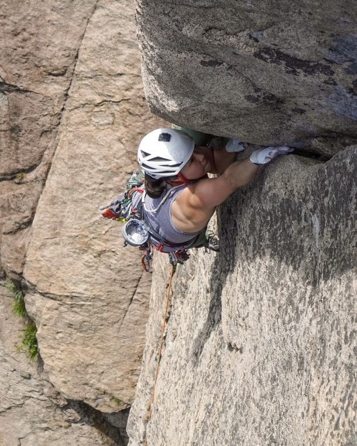
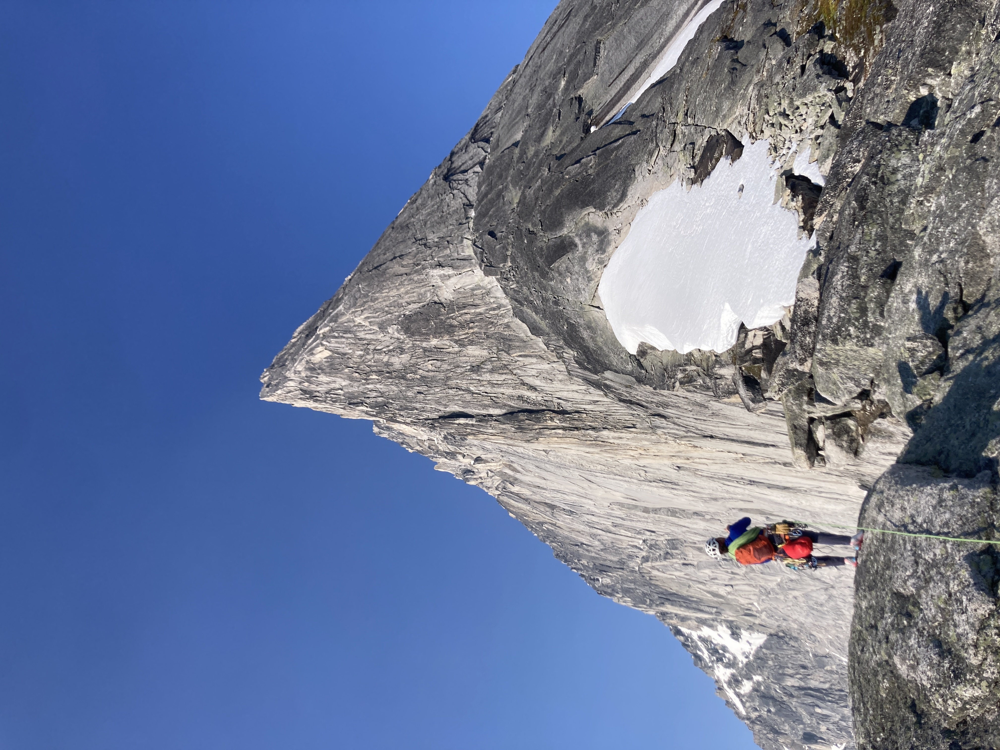
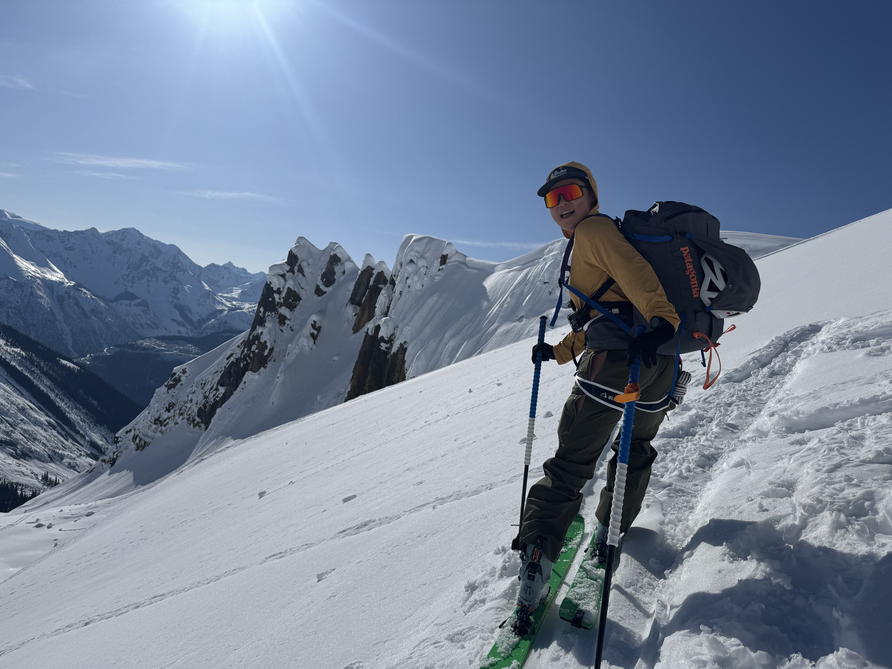

my name is minji. i spend my vacations above the treeline, with a heavy pack and no cell service.
i take type 2+ fun vacations on purpose. a week of cold hands, thin air, and route-finding mistakes, and the world becomes simple again. eat, move, don't fall. everything else gets quiet.
"if you don't experience real physical fear from time to time, your mind will create fears out of nothing." an alex honnold idea i keep coming back to. without real stakes once in a while, we make mountains out of molehills. a small, managed dose of actual danger is the most reliable off switch i've found for a noisy mind.
last week i came down from seven days of alpine climbing in the bugaboos, a week of pure vertical movement. when you step off the wall, there is a specific relief that the dangerous part is over. an hour into the drive back to the airport, i witnessed a fatal car accident. it was the first time i had seen death that close. on a road with no signal for a 105 km stretch, people stood at the roadside trying iphone satellite sos to reach 911. all that technology, and we were helpless. it was the most dystopian scene i've ever experienced.
most people call the mountains the dangerous part and the drive home the safe part. spending my vacations in the places that make life feel most vivid is the right way for me.
it started with trail running and ultralight backpacking. then i became a patagonia brand ambassador, learned the other athletes' sports alongside them, and every horizontal movement became vertical. my favorite genre is multi-pitch trad, which i think has the most moving parts in climbing, stacked hundreds of meters off the ground. in the bugaboos we met a couple who both climb 5.14. just bailing from mid-route had taken them 13 hours. grades don't protect you from the mountain's logistics, and nothing else demands that much judgment, focus, and self-trust at once.
in winter i ski in the backcountry, even with the avalanche news and all. one foot in front of the other to the summit, then an untouched run down. it's the best reset i know. i don't know how long this will last. for now, it's essential.
i look for people who deal with ambiguity by making a plan and keeping their sense of humor. if that sounds like you, email me. i'm always looking for partners for the next adventure, on and off the mountains.


